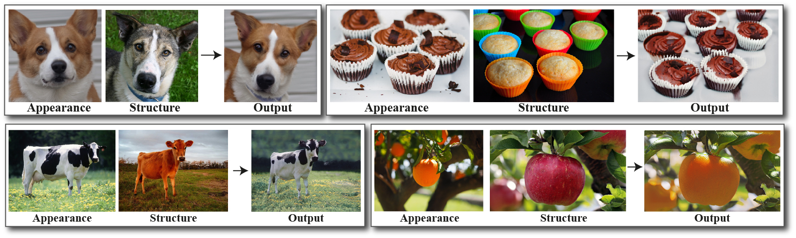

Publications
Lumiere: A Space-Time Diffusion Model for Video Generation
Omer Bar-Tal*,Hila Chefer*, Omer Tov*,Charles Herrmann,Roni Paiss, Shiran Zada,Ariel Ephrat,Junhwa Hur,Yuanzhen Li,Tomer Michaeli,Oliver Wang,Deqing Sun,Tali Dekel,Inbar Mosseri
2024
Space-Time Diffusion Features for Zero-Shot Text-Driven Motion Transfer
Danah Yatim*, Rafail Fridman*, Omer Bar-Tal, Yoni Kasten, Tali Dekel
2024
TokenFlow: Consistent Diffusion Features for Consistent Video Editing
Michal Geyer*, Omer Bar-Tal*, Shai Bagon, Tali Dekel
International Conference on Learning Representations (ICLR) 2024
MultiDiffusion: Fusing Diffusion Paths for Controlled Image Generation
Omer Bar-Tal*, Lior Yariv*, Yaron Lipman, Tali Dekel
International Conference on Machine Learning (ICML) 2023
Text2LIVE: Text-Driven Layered Image and Video Editing
Omer Bar-Tal*, Dolev Ofri-Amar*, Rafail Fridman*, Yoni Kasten, Tali Dekel
European Conference on Computer Vision (ECCV) 2022, Oral
